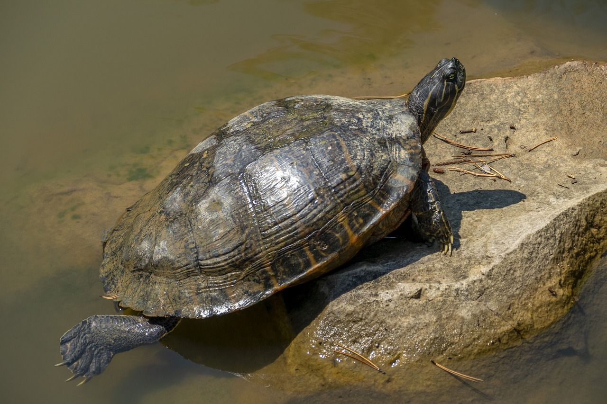
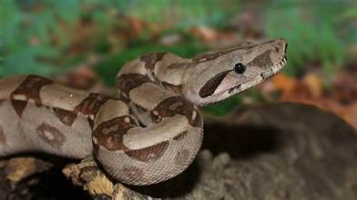
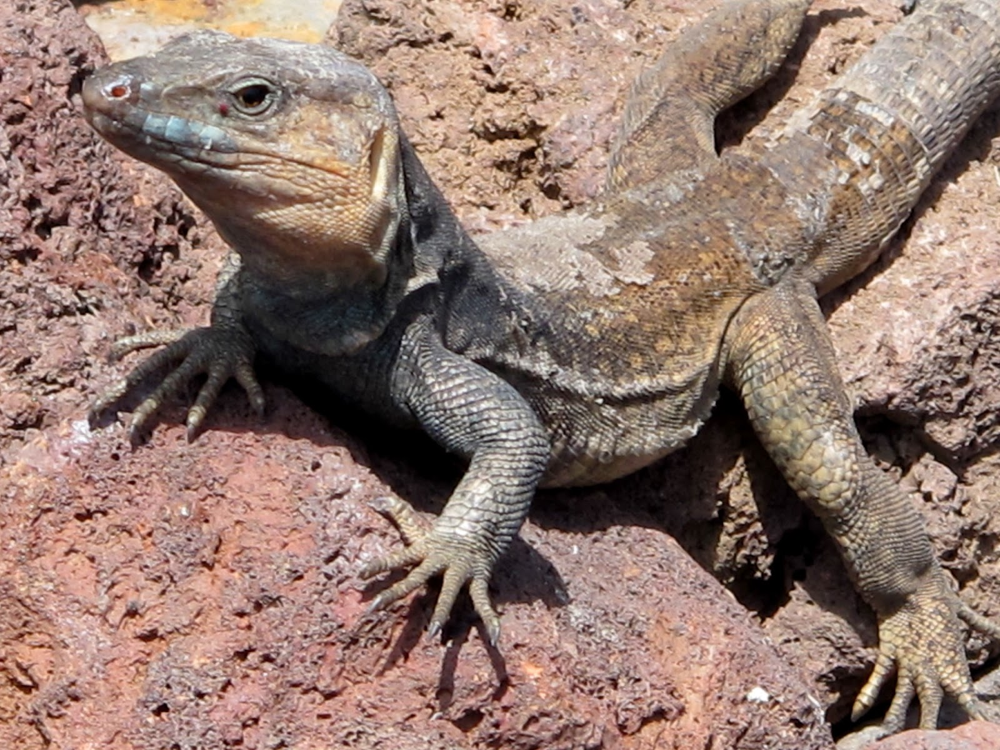
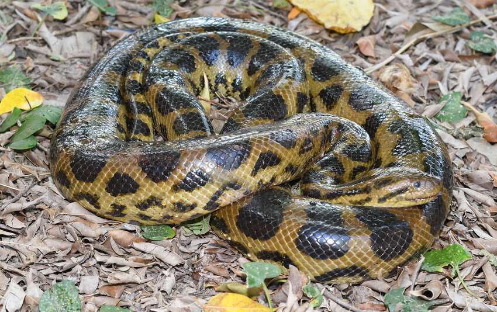

Caimán del Paraguay (Caiman yacare)
Hábitat: Ríos, lagunas y pantanos del oriente boliviano.
Amenazas principales: Caza furtiva por su piel, destrucción de humedales y contaminación del agua.
Medidas de conservación: Protección en reservas naturales, programas de reproducción y control de caza ilegal.
Rol ecológico: Regula poblaciones de peces y mantiene el equilibrio de los ecosistemas acuáticos.
Ejemplares estimados: Entre 15,000

Tortuga del Río Arica (Podocnemis expansa)
Hábitat: Ríos caudalosos y playas arenosas del norte amazónico.
Amenazas principales: Recolección de huevos, caza y contaminación por residuos plásticos y mineros.
Medidas de conservación: Protección de playas de anidación y campañas de educación ambiental.
Rol ecológico: Contribuye a la dispersión de nutrientes y a la estabilidad de los ecosistemas acuáticos.
Ejemplares estimados: Entre 8,000

Boa de las Llanuras (Boa constrictor occidentalis)
Hábitat: Zonas boscosas y sabanas húmedas del oriente y Chaco boliviano.
Amenazas principales: Caza por su piel y muerte por miedo humano.
Medidas de conservación: Educación para evitar su persecución y control del comercio ilegal.
Rol ecológico: Controla poblaciones de roedores, ayudando al equilibrio del ecosistema.
Ejemplares estimados: 20,000

Lagarto de Tucavaca (Liolaemus sp.)
Hábitat: Bosques secos y serranías de Tucavaca, Santa Cruz.
Amenazas principales: Incendios forestales, deforestación y expansión agrícola.
Medidas de conservación: Protección del Área Natural de Manejo Integrado Tucavaca.
Rol ecológico: Controla insectos y sirve de alimento a aves y serpientes.
Ejemplares estimados: Aproximadamente 1,200

Tortuga Chaqueña (Chelonoidis chilensis)
Hábitat: Zonas áridas y semiáridas del Chaco boliviano.
Amenazas principales: Caza, tráfico ilegal y quema de su hábitat.
Medidas de conservación: Prohibición de captura y programas de reintroducción.
Rol ecológico: Dispersa semillas y contribuye al ciclo de nutrientes del suelo.
Ejemplares estimados: Alrededor 3,000

Anaconda Boliviana (Eunectes beniensis)
Hábitat: Ríos y pantanos del Beni y Pando.
Amenazas principales: Pérdida de hábitat y caza ilegal.
Medidas de conservación: Protección de humedales y monitoreo científico de poblaciones.
Rol ecológico: Regula poblaciones de peces, aves y mamíferos pequeños.
Ejemplares estimados: Entre 5,000
Iguana Verde (Iguana iguana)
Hábitat: Bosques tropicales y riberas húmedas del oriente boliviano.
Amenazas principales: Tráfico ilegal y deforestación.
Medidas de conservación: Protección legal y educación sobre su importancia ecológica.
Rol ecológico: Dispersora de semillas y controladora de insectos.
Ejemplares estimados:Aproximadamente 12,000
Serpiente Coral (Micrurus surinamensis)
Hábitat: Bosques amazónicos y zonas ribereñas.
Amenazas principales: Deforestación y muerte por persecución humana.
Medidas de conservación: Campañas educativas y protección de hábitats amazónicos.
Rol ecológico: Controla poblaciones de anfibios y pequeños reptiles.
Ejemplares estimados: Entre los 4,500

Lagarto del Chaco (Tropidurus etheridgei)
Hábitat: Zonas áridas del Chaco y sabanas secas.
Amenazas principales: Expansión agrícola e incendios forestales.
Medidas de conservación: Protección de áreas chaqueñas y monitoreo de poblaciones.
Rol ecológico: Controla poblaciones de insectos y sirve de presa a aves rapaces.
Ejemplares estimados: Alrededor 2,300
Tortuga Amazónica (Podocnemis unifilis)
Hábitat: Ríos amazónicos con playas arenosas.
Amenazas principales: Caza, recolección de huevos y contaminación minera.
Medidas de conservación: Programas de conservación de nidos y educación ambiental.
Rol ecológico: Dispersa nutrientes y mantiene el equilibrio ecológico de los ecosistemas fluviales.
Ejemplares estimados: Acerca 6,500